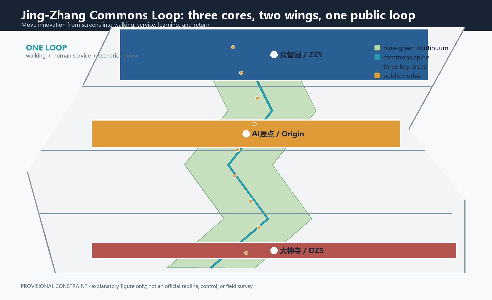
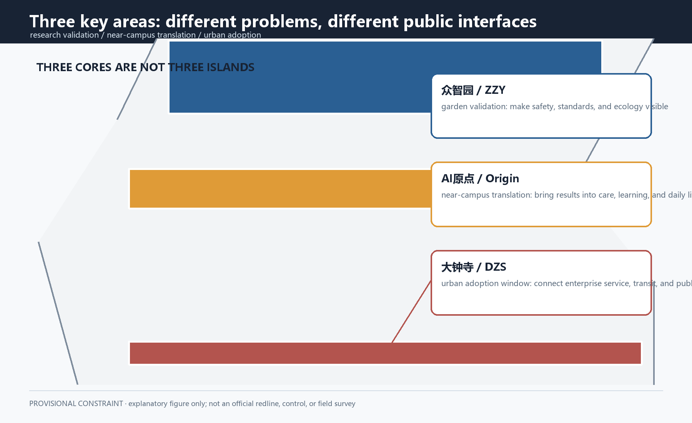
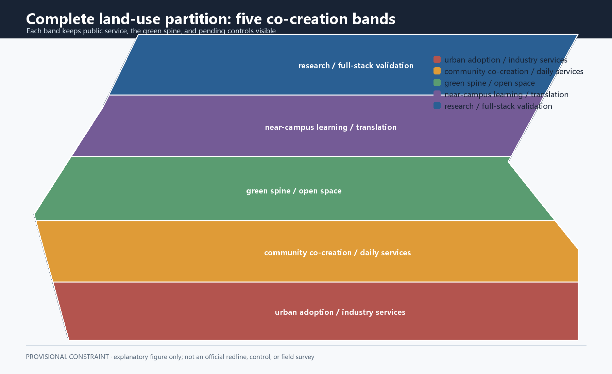
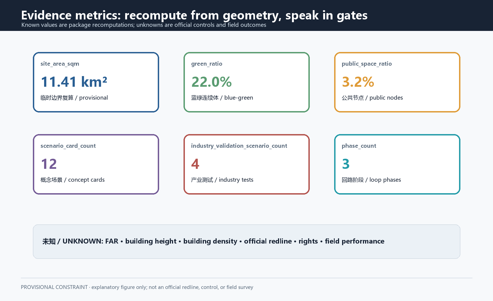
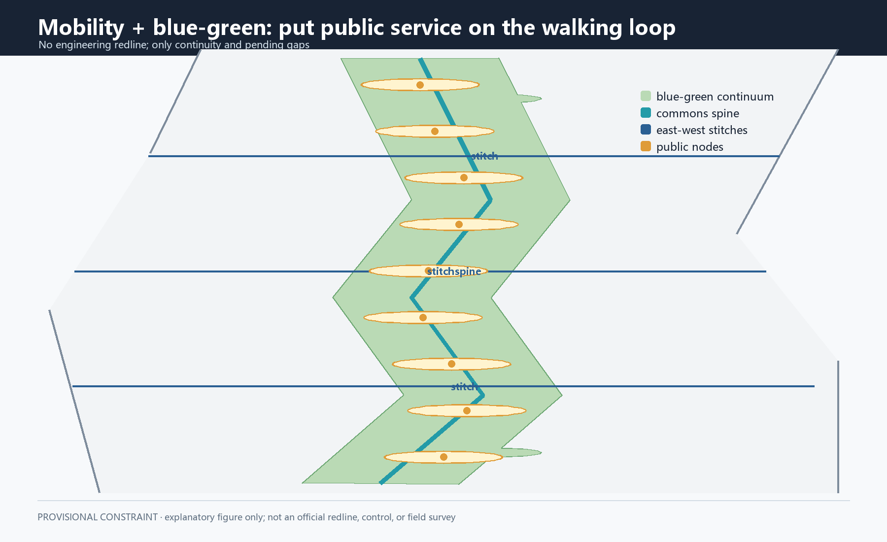

Coordinated research area
Approximately 43.6 million sqm: connect innovation, talent, services, and cultural narrative.
Return AI innovation to public life: make a problem visible, try a low-risk prototype, publish the correction, and decide whether to keep, modify, pause, or return it. This page uses only local package figures and evidence.
Five local plates and nine GeoJSON layers describe one co-creation spine, two service wings, three translation courtyards, and four public gates.



Values match metrics.json. Known means recomputable from submitted geometry; unknown means the package cannot support a statutory control.
The coordinated level frames industry and future-city research; the overall level frames the public skeleton; the key-area level frames a testable spatial protocol.
Approximately 43.6 million sqm: connect innovation, talent, services, and cultural narrative.
Approximately 11.4 million sqm: organize slow mobility, blue-green, land use, and renewal relationships.
Approximately 3.684 million sqm: three actions—verification, translation, adoption.
Not closed campuses: public interfaces that translate research, community, and enterprise services into understandable and stoppable interactions.
Low-speed test walk, model-safety explanations, and low-carbon urban problem co-testing.
Shared classroom, neighbourhood help desk, readable interfaces, and paper alternatives.
Transit forecourt, enterprise-service window, and a public keep/modify/pause/return wall.
Five conceptual codes—05, 0802, 0804, 1401, and 0702—describe mixed relationships, not land rights or statutory use.

Railway memory as line, readable slow mobility as surface, and interchange services as gates. ROAD-001 is a conceptual spine.

Public space should be understandable, sit-able, participatory, and escapable. Area is conceptual geometry, not ecological performance.
Rest edges, weather alternatives, and removable shade beside the spine.
Everyday interfaces for issue collection, explanation, trial, and return.
Commons Experiment Walk, Railway Memory Court, and Commons Return Wall; each requires clearance.
Retain first, renovate second, discuss additions last. Fifteen building objects support relationship checks only.
Keep objects that can host public service and memory interpretation through reversible reuse.
Review access, daylight, energy, fire, and maintenance conditions.
Only a later professional topic after ownership, survey, structure, and public impact are verified.
Twelve cards, including four industry-validation cards. Every card states recipient, place, minimum data, human fallback, stop method, and evaluation.
Public counts and human walk-through.
Grade, rest, companion, and paper route.
Information only, no diagnosis.
Courses, open classes, and local issues.
IP, testing, finance, and talent steps.
Public or synthetic examples.
Human supervision and conflict review.
Cleared text and abstract graphics.
Anonymous category and public status.
Aggregated trends only.
Submit, review, rollback, acknowledge.
Multilingual route and human welcome.
Announcement and taskbook requirements connect to text, matrices, layers, metrics, PDFs, HTML, and local gates.
Formal sources, publishers, links, access dates, reuse, and limitations are in sources.json. Peer work supplied method reading only.
Boundary, regulatory, road, ownership, building, heritage, municipal, and service gaps remain visible in assumptions.json.
Validation, spatial, visual, professional, self-check, and participant preflight are run locally; no upload or pull request is made here.